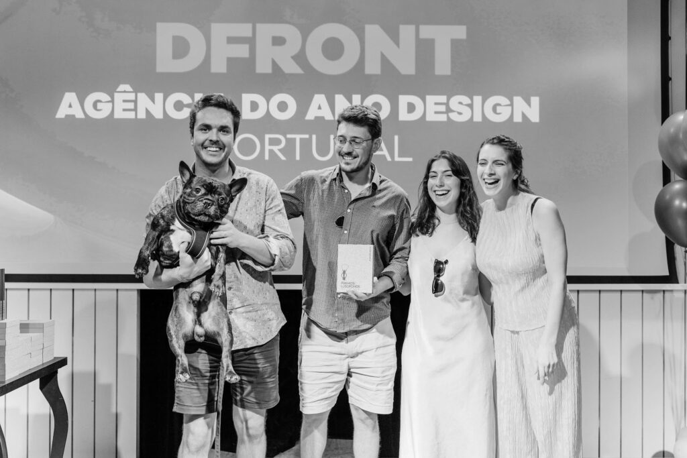

Inspiração

01.
Sempre que vejo o trabalho do United by Atelier dAlves, identifico-me com a forma direta e confiante como constroem a comunicação visual. Há uma simplicidade pensada que não parece forçada, mas sim resultado de muitas decisões bem resolvidas.Conheci este designer a partir de uma palestra na faculdade, e isso ajudou-me a perceber melhor o seu processo e a forma como pensam o design de maneira mais estratégica e consciente. Inspiro-me neste atelier porque quero chegar a esse ponto de clareza no meu próprio trabalho: conseguir comunicar mais com menos, sem perder força ou intenção. Dá-me vontade de simplificar o que faço e ser mais consciente nas minhas escolhas.

02.
Inspiro-me nos designers da DFRONT porque representam uma abordagem contemporânea e estratégica do design, onde a criatividade não existe isolada, mas sim integrada com pensamento crítico, funcionalidade e impacto real. O trabalho da equipa demonstra uma capacidade consistente de transformar ideias em soluções visuais claras, eficazes e adaptadas a diferentes contextos, o que revela não só domínio técnico, mas também uma compreensão profunda das necessidades do utilizador. Outro aspeto que me motiva é a forma como conseguem equilibrar inovação com coerência visual. Há uma identidade forte no que produzem, mas sem perder flexibilidade criativa, o que mostra maturidade profissional e atenção ao detalhe. Essa consistência inspira-me a procurar o mesmo nível de rigor e intenção no meu próprio processo criativo. Além disso, valorizo a forma como o design é tratado como um processo colaborativo dentro da empresa.